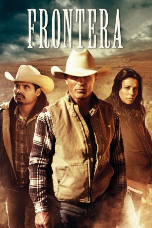

#1975 Frontera
 gesehen am 16.09.2015
gesehen am 16.09.2015
 
 IMDB-Wertung: 6.6 / 10
IMDB-Wertung: 6.6 / 10  Metascore: 58
Metascore: 58 
An der Grenze zwischen Mexiko und den USA, wird eine Frau während eines Ausritts auf ihrer Ranch erschossen. Um die "Frontera" zu überschreiten nehmen illegale Einwanderer große Risiken auf sich. So auch Miguel, der in den Vereinigten Staaten Arbeit finden möchte, um seiner hochschwangeren Frau Paulina und dem Nachwuchs eine bessere Zukunft zu ermöglichen. Doch der Mexikaner ist zur falschen Zeit am falschen Ort: Er wird als Mörder der Farmerin beschuldigt und landet im Gefängnis. Indes ist der Ehemann der Toten, ein ehemaliger Sheriff, nicht zufrieden mit den Ermittlungen im Mordfall seiner Frau. Gemeinsam mit dem amtierenden Gesetzeshüter versucht er, die Wahrheit ans Licht zu bringen. Währenddessen kämpft Miguels schwangere Frau um ihren inhaftierten Mann und bringt sich damit selbst in große Gefahr…
Jahr: 2014
Dauer: 103 Minuten
FSK: 12
Land: USA Studio: Magnolia PicturesTonspuren: DTS - ,
Untertitel:
Auflösung: 1080p (1920x800) Größe: 4423 MB
Genre: Drama
Regisseur: Michael Berry
Drehbuch: Michael Berry, Louis Moulinet
Soundtrack: Kenneth Lampl, Darren Tate
Darsteller:
 Ed Harris als Roy
Ed Harris als Roy Michael Peña als Miguel
Michael Peña als Miguel Eva Longoria als Paulina
Eva Longoria als Paulina Amy Madigan als Olivia
Amy Madigan als Olivia Aden Young als Sheriff Randall Hunt
Aden Young als Sheriff Randall Hunt- Michael Ray Escamilla als Jose
 Daniel Zacapa als Abuelo
Daniel Zacapa als Abuelo Seth Adkins als Sean
Seth Adkins als Sean- Evan Adrian als Brad
- Tony Ford als Kevin
- Michelle Rios als Flora
- Lorél Medina als Angelica
- Marilyn Rising als Kaye
 Matthew Page als Carl
Matthew Page als Carl Julio Cedillo als Ramon / Main Coyote
Julio Cedillo als Ramon / Main Coyote Debrianna Mansini als Real Estate Lady
Debrianna Mansini als Real Estate Lady- Abe Martell als Middle Eastern Man
 Bernardo Saracino als Middle Eastern Man
Bernardo Saracino als Middle Eastern Man Alex Knight als Husband
Alex Knight als Husband Rebekah Wiggins als Wife
Rebekah Wiggins als Wife- Michael Butler Murray als Deputy Matthew
 Luis Bordonada als Home Invader with Knife
Luis Bordonada als Home Invader with Knife- Jesus Mayorga als Home Invader
 Dylan Kenin als ICE Agent
Dylan Kenin als ICE Agent Mia Stallard als Claire
Mia Stallard als Claire- Michael Berry als Father
- Monica Sanchez als Sean's Mother
- Kristin Hansen als Substitute Teacher
 Anthony Escobar als Coyote 1
Anthony Escobar als Coyote 1 Vic Browder als Border Guard Edward
Vic Browder als Border Guard Edward- Eric A. Williams als 4x4 Shooter
 Kevin Wiggins als Officer
Kevin Wiggins als Officer Lora Martinez-Cunningham als Laura Zamora
Lora Martinez-Cunningham als Laura Zamora Jon Kristian Moore als Brad's Father
Jon Kristian Moore als Brad's Father- Genia Michaela als
- Kristen Rakes als ICE Woman Guard
 Joshua R. Aragon als Mexican Immigrant , uncredited
Joshua R. Aragon als Mexican Immigrant , uncredited- Rich Chavez als Suspect , uncredited
- Michael Fletcher als Police Officer , uncredited
- Robb Moon als Border Crosser , uncredited
- William A. Rodriguez als Mexican Immigrant , uncredited
- Tenaya Torres als Nana
- Salome Martinez Lutz als Old Woman
- Ben Ziegler als Deputy Terrence
- Sarah Uriarte Berry als Mother
- Madeleine Berry als Carly
- Judith Rane als Parker
- Julian Ortega als Counter Kid
- Rafael Herrera als Coyote 2
- Rosalia De Aragon als Phoenix Doctor
Datei: X:\2014(A-F)\Frontera (2014, FSK, 1920x800).mkv seit 14.09.2015
Festplatte: HD 2013(I-Z)-2014(A-Z)
 Es gibt insgesamt 119 Filme in der Gruppe '2014(A-F)'
Es gibt insgesamt 119 Filme in der Gruppe '2014(A-F)'